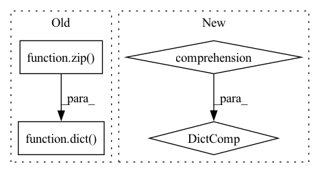

Pattern ID :12709
Before Change
else:
keys = list(range(self.num_nodes))
vals = list(range(self.num_nodes))
mapping = dict( zip( keys, vals))
if init:
// init is only true when creating the variables
// edge_label_index and node_label_index
self.edge_label_index = self.edge_index // by defaultAfter Change
// get edges
self.edge_index = self._edge_to_index(list(self.G.edges))
else:
mapping = {x: x for x in range(self.num_nodes)}
if init:
// init is only true when creating the variables
// edge_label_index and node_label_index
self.edge_label_index = self.edge_index // by defaultIn pattern: SUPERPATTERN
Frequency: 4
Non-data size: 4
Instances Fragment ID: 43021888
Project Name: snap-stanford/deepsnap
Commit Name: ac9a40b249847208514871e227178adc9c506fda
Time: 2020-11-12
Author: xhe17@stanford.edu
File Name: deepsnap/graph.py
M Class Name: Graph
N Class Name: Graph
M Method Name: _update_index(2)
N Method Name: _update_index(2)
M Parent Class: object
N Parent Class: object
M File Name: deepsnap/graph.py
N File Name: deepsnap/graph.py
M Start Line: 627
M End Line: 629
N Start Line: 627
N End Line: 627
Before Change
def forward(self, x, **kwargs):
shape = x.shape
reconstitute_kwargs = dict( tuple(zip( self.from_einops.split(" "), shape) ))
x = rearrange(x, f"{self.from_einops} -> {self.to_einops}")
x = self.fn(x, **kwargs)
x = rearrange(x, f"{self.to_einops} -> {self.from_einops}", **reconstitute_kwargs)
return xAfter Change
def forward(self, x, **kwargs):
shape = x.shape
reconstitute_kwargs = {key: shape[position] for key, position in self.reconstitute_keys}
x = rearrange(x, f"{self.from_einops} -> {self.to_einops}")
x = self.fn(x, **kwargs)
x = rearrange(x, f"{self.to_einops} -> {self.from_einops}", **reconstitute_kwargs)
return x Fragment ID: 43021889
Project Name: lucidrains/einops-exts
Commit Name: 297bdf92c7137de46a48043fdba77d379b9c17b3
Time: 2023-01-05
Author: fzimmermann89@gmail.com
File Name: einops_exts/torch.py
M Class Name: EinopsToAndFrom
N Class Name: EinopsToAndFrom
M Method Name: forward(2)
N Method Name: forward(2)
M Parent Class: nn.Module
N Parent Class: nn.Module
M File Name: einops_exts/torch.py
N File Name: einops_exts/torch.py
M Start Line: 14
M End Line: 15
N Start Line: 22
N End Line: 23
Before Change
dataset = self._context.get_data_by_kind(self._dataset_kind)
indexes = list(dataset.data_loader.batch_sampler)[self.batch_index]
props = itemgetter(*indexes)(props)
props_to_cache = static_prop_to_cache_format(dict( zip( indexes, props)) )
return props_to_cache
def _get_cropped_images(self):After Change
props = self._context.static_properties[self._dataset_kind]
dataset = self._context.get_data_by_kind(self._dataset_kind)
indexes = list(dataset.data_loader.batch_sampler)[self.batch_index]
index_to_prop = {index: props[index] for index in indexes}
props_to_cache = static_prop_to_cache_format(index_to_prop)
return props_to_cache
def _get_cropped_images(self): Fragment ID: 43021890
Project Name: deepchecks/deepchecks
Commit Name: 95067130faad46fcf5a88adf2e8f8b054c0ab942
Time: 2022-11-16
Author: matan@deepchecks.com
File Name: deepchecks/vision/batch_wrapper.py
M Class Name: Batch
N Class Name: Batch
M Method Name: _do_static_prop(1)
N Method Name: _do_static_prop(1)
M Parent Class:
N Parent Class:
M File Name: deepchecks/vision/batch_wrapper.py
N File Name: deepchecks/vision/batch_wrapper.py
M Start Line: 103
M End Line: 107
N Start Line: 103
N End Line: 107
Before Change
// Dict keys are format metric_class
metric_class = check_result.value.loc[:, ["Metric", "Class Name"]].aggregate(lambda x:
"_".join(filter(None, x)), axis=1)
output_dict = dict( zip( metric_class, check_result.value["Value"]))
return output_dict
def add_condition_greater_than(self, threshold: float, metrics: List[str] = None, class_mode: str = "all"):
Add condition - the result is greater than the threshold.After Change
def reduce_output(self, check_result: CheckResult) -> Dict[str, float]:
Return the values of the metrics for the dataset provided in a {metric: value} format.
result = {row["Metric"] + "_" + str(row["Class Name"]): row["Value"] for _, row in
check_result.value.iterrows()}
for key in [key for key in result.keys() if key.endswith("_<NA>")]:
result[key.replace("_<NA>", "")] = result.pop(key)
return result
Fragment ID: 43021891
Project Name: deepchecks/deepchecks
Commit Name: 2672ac2b68e5e8f5371a25c308619dd6ab035325
Time: 2022-08-02
Author: 67195469+Nadav-Barak@users.noreply.github.com
File Name: deepchecks/vision/checks/model_evaluation/single_dataset_performance.py
M Class Name: SingleDatasetPerformance
N Class Name: SingleDatasetPerformance
M Method Name: reduce_output(2)
N Method Name: reduce_output(2)
M Parent Class: SingleDatasetCheck,ReduceMixin
N Parent Class: SingleDatasetCheck,ReduceMixin
M File Name: deepchecks/vision/checks/model_evaluation/single_dataset_performance.py
N File Name: deepchecks/vision/checks/model_evaluation/single_dataset_performance.py
M Start Line: 66
M End Line: 74
N Start Line: 65
N End Line: 69